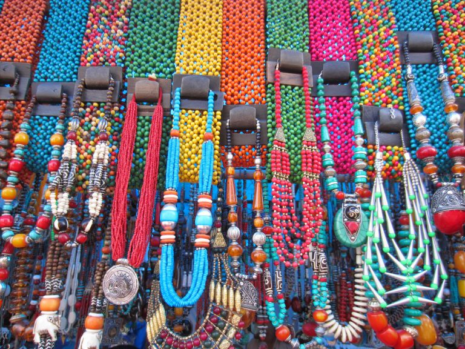
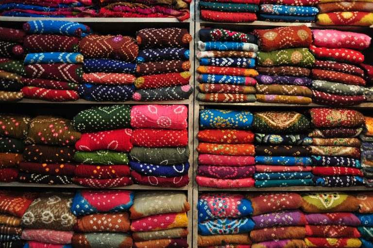
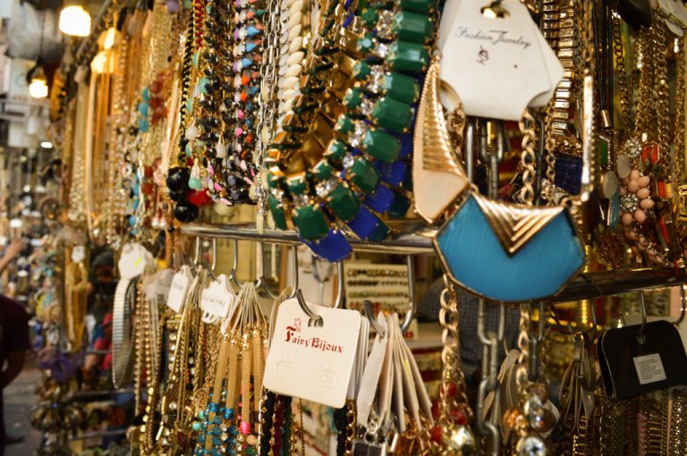
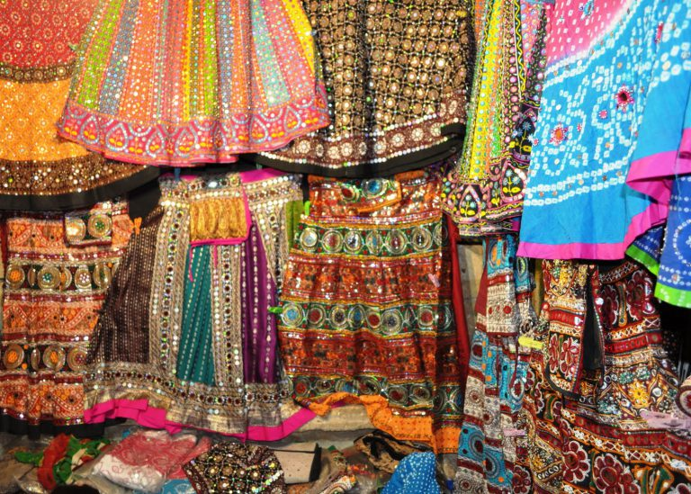
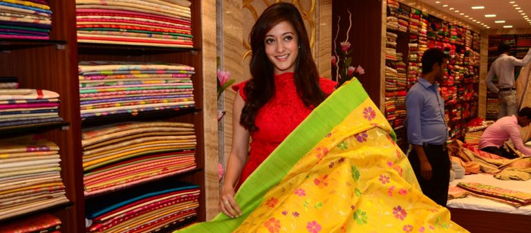
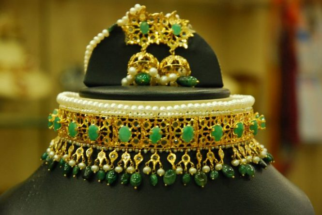
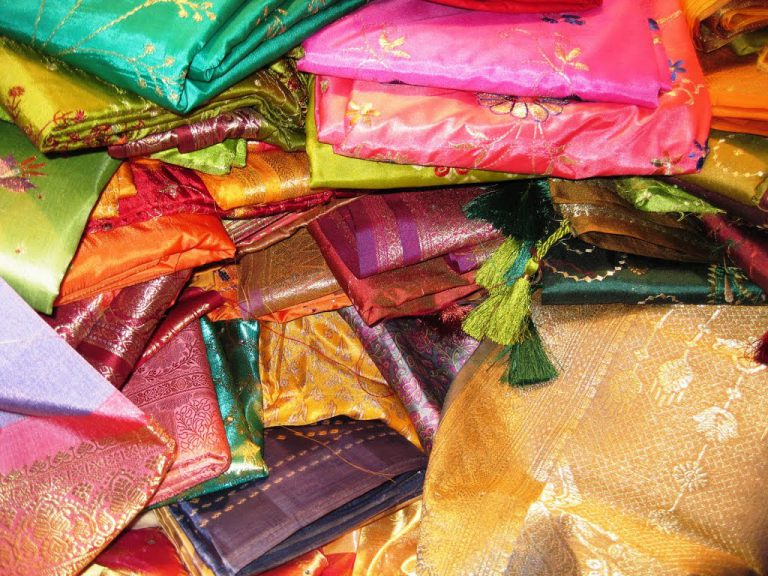
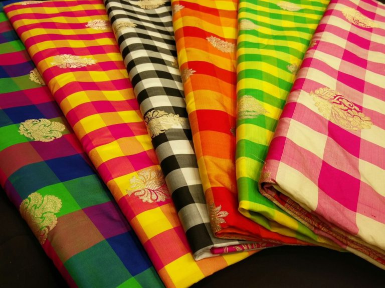
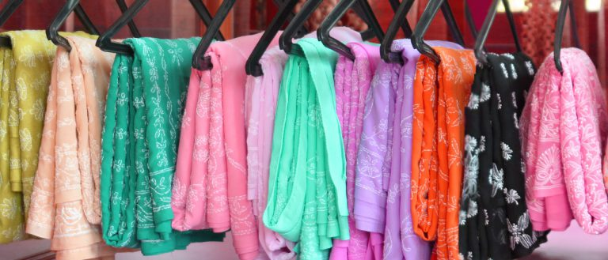
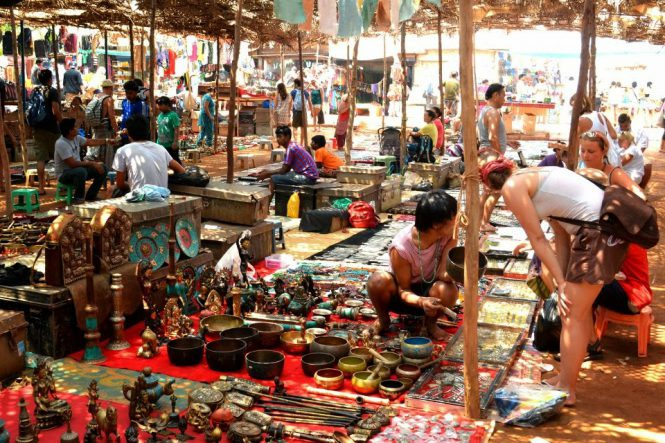

Reiligious-Places
Hill-Stations Beaches
Historical-Places Adventure
Night-Life Photography
Food
Reiligious-Places
Hill-Stations Beaches
Historical-Places Adventure
Night-Life Photography
Food
Reiligious-Places
Hill-Stations Beaches
Historical-Places Adventure
Night-Life Photography
Food
Reiligious-Places
Hill-Stations Beaches
Historical-Places Adventure
Night-Life Photography
Food
If you believe that shopping is a waste of time and money, then perhaps you don’t know the concept of retail therapy. Shopping is a real fun and a true stress
buster. Shopping in India is a wonderful experience as it is one of those exceptional countries where age-old traditions co-exist with swiftly insightful
modernity. You can find here the availability of several shopping arcades, malls, and designer boutiques of all leading brands; however what makes India a
shopper’s paradise is the wide range of Indian artifacts, textiles, handicrafts and handlooms. Real Indian products display the traditional skills and
perfection of its master craftsmen. If you are planning a holiday trip in India, the country will give you great shopping experiences.
If you are a bargain hunter,then you cannot find a place better than India for a eonderful shopping experience. Go through these destinations to enjoy
shopping like never before.

Delhi is the biggest preference for the shopaholics of India not only since you can get everything here, but also due to the experience. The plush malls of West & South Delhi to vibrant Dilli Haat or street markets of Sarojini Nagar, Lajpat Nagar and Palika Bazaar, each shopping of Delhi has a special charm. From accessories, clothes and handicrafts, to electronics and automobiles, you can find everything in Delhi. Don’t forget to hang around Janpath as it has a lot to offer you. Shopping in Delhi teaches you several things ranging from managing budget to going with your preferences.

Known for majestic palaces, monuments and royalty, Pink City is also recognized for shopping and its different aspects. It is one of the best destinations for shopping in India. The celebrated Bapu Bazaar and Johari Bazaar of Jaipur are ideal places for entering into the vibrant world of Rajasthani fabrics including bandhnis, lehariyas and batik prints. In these markets, you can also buy lakh bangles, silver jewelries, and several other varieties of ornaments which are not just durable but authentic and affordable as well. People from all over the world visit Jaipur for shopping.

Fashion Capital of India and City of Dreams, Mumbai is a heaven for shopaholics. Full of ultramodern sophisticated malls, flea markets, designer boutiques and several shopping arcades, Mumbai is a perfect shopping destination in India for all. Fashion Street and Linking Road are known for offering latest fashionable clothes, accessories and artifacts. For youngsters and fashion freaks, Colaba Causeway and Zaveri Bazaar in South Mumbai are ultimate haunts as they can find here awesome collections of stylish and funky items.

Due to being the biggest city of the vibrant state of Gujarat, Ahmedabad features a number of exceptional shopping markets. To satisfy your shopping spree, you can buy here chaniya choli, Patola work fabrics, traditional attires with mirror and bandhej work and variety of handicrafts. Traditional dress materials and sarees are must buy from Ahmedabad.

Unpredictable and vibrant, crowded and exciting, Kolkata is a city of contradictions enjoying an unusual appeal. It is among the cheapest places to shop in India. Shopping in traditional markets and streets of Kolkata is an amazing experience due to its tremendous exposure. Some of the eminent shopping destinations for shopping are New Market on Lindsay Street, Assam Craft Emporium and Nagaland Emporium. Comprised of a number of shopping centers, Kolkata is an ideal base to buy variety of traditional stuffs.

The City of Nizams – Hyderabad brings a wonderful shopping experience for its visitors. Known for authentic pearls and jewelries made with pearls, Hyderabad simply takes your heart away. Laad Bazaar is a famous place for buying pearl sets and semi-precious jewelries. Hyderabadi Khara dupatta and antiques are also stuffs to buy from Hyderabad.

If you have a taste for gold and craft works, Mysore is the perfect stopover for you. You are going to be overwhelmed with the vibrant markets, a variety of products offered at the local shops and incredible affordable rates available in Mysore. You can buy here various items like Mysore Silk Saris, collection of sandalwood and rosewood handicrafts, excellent range of furniture, sculptures, paintings and Mysore Pak.

The religious capital of India, Banaras is also known for its exclusive Banarasi Sarees. Famous for offering a graceful look, and comprised of its fine weaving and intricate embroidery with silver and gold thread, Banarasi Sarees are simply awesome. Apart this, you can also buy several other stuffs in Banaras like Silk scarves, men’s kurtas, and unstitched fabrics.

The city of Nawabs – Lucknow is fun to visit if you are a shopaholic. Tourists from every corner of India visit the shopping districts of Lucknow. Hazrat Gunj and Aminabad are main shopping centers of this city. Even the smallest of shops of these places display a variety of things. In the City of Nawabs, chikankari work on different fabrics is really famous. Some other things to buy are itr (perfume) and exquisitely carved ornaments.

Along with being a beach destination, Goa also offers great opportunities for shopping. You can buy here artificial jewels and trinkets, beachwear and readymade garments, local handicrafts, unique collection of handbags and a variety of accessories. Some of the popular markets for shopping in Goa are Anjuna Flea Market, Saturday Night Bazaar, Mapusa Market and Calangute Market Square.